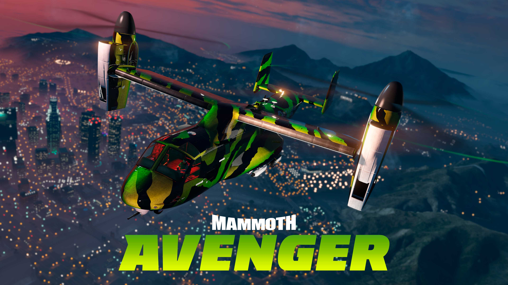

Avenger
O Avenger é um avião blindado e armado apresentado em GTA Online, adicionados ao jogo como parte do Assalto do Juízo Final adicionado em 12 de dezembro de 2017.
Vem com Modo furtivo, o que faz com que o veículo fique escondido do minimapa e permite que toda a tripulação navegue sem ser avistada por radares inimigos. Esta aeronave pode executar decolagem e pouso vertical (VTOL), o que significa que pode pairar, decolar e pousar verticalmente sem a necessidade de pista.
Metodo de Obter:
O Avenger pode ser comprado no GTA Online na Warstock Cache & Carry por um preço de $ 3.450.000.
O Avenger pode ser armazenado no Hangar (Aeronaves Pessoais) e no Complexo. Só pode ser personalizado na Oficina de Veículos dedicada no Hangar (Aeronaves Pessoais) e na Oficina do Complexo.
Uma vez adquirido, você pode solicitar a entrega do Avenger a partir do Menu de Interação - Propriedades Moveis - Avenger. Entretanto, o Avenger não pode ser usado em corridas padrão.
Melhorias e Personalizações
Defesa do Piloto Automático
- Nenhum
- Módulo Stealth: $ 350.000
- Bloqueador de Bloqueio
de Mísseis: $ 350.000
Armas Primárias
- Torre Montada na frente: Gratis
- Torres Dianteiras,
Superios e Traseiras: $ 240.000
Metralhadoras
- Nenhum
- Metralhadoras: $ 195.000
Lançador de Mísseis
- Nenhum
- Lançador de Mísseis: $ 240.000
Blindagem
- Sem Blindagem: $ 1.000
- Blindagem 20%: $ 7.500
- Blindagem 40%: $ 12.000
- Blindagem 60%: $ 20.000
- Blindagem 80%: $ 35.000
- Blindagem 100%: $ 50.000
Bombas
- Nenhum
- Explosivo: $ 75.000
- Incendiário: $ 85.000
- Gás: $ 95.000
- Aglomerado: $ 120.000
Contramedidas
- Nenhum: $ 700
- Chaff: $ 70.000
- Sinalizador: $ 110.000
- Fumaça: $ 68.500
Lucro e Funcionamento
▸ Lucro Principal: Projeto Overthrow e Operações LSA
Ao instalar o Terminal de Operações, você se torna um mercenário. O lucro vem de duas frentes:
- Projeto Overthrow: Uma série de 6 missões de história. O pagamento final pela primeira conclusão gira em torno de $250.000, além dos pagamentos individuais de cada missão (~$20k a $65k).
- Operações LSA: Missões de contrato no Modo Livre. Pagam cerca de $45.000 a $70.000 por missão e podem ser feitas rapidamente.
▸ Recompensas e Utilidade Técnica
- Oficina de Veículos e Armas: Permite converter armas para Mk II e tunar veículos armados (como o Thruster ou o Deluxo).
- Melhorias de Defesa: O Avenger pode ser equipado com Piloto Automático, permitindo que você saia do cockpit e use as Torres de Canhão para bombardear o mapa lá de cima.
- Bombas e Contra-medidas: Pode carregar 50 bombas e usar Chaff ou Flares para desviar de mísseis.
O Avenger é muito versátil. Se você já tem um Hangar, o Avenger é a sua melhor compra, pois permite que você realize missões de lucro direto enquanto se desloca rapidamente pelo mapa.
Assista a este guia para saber mais sobre. Este vídeo explica como funciona o esquema e como gerenciar.
l